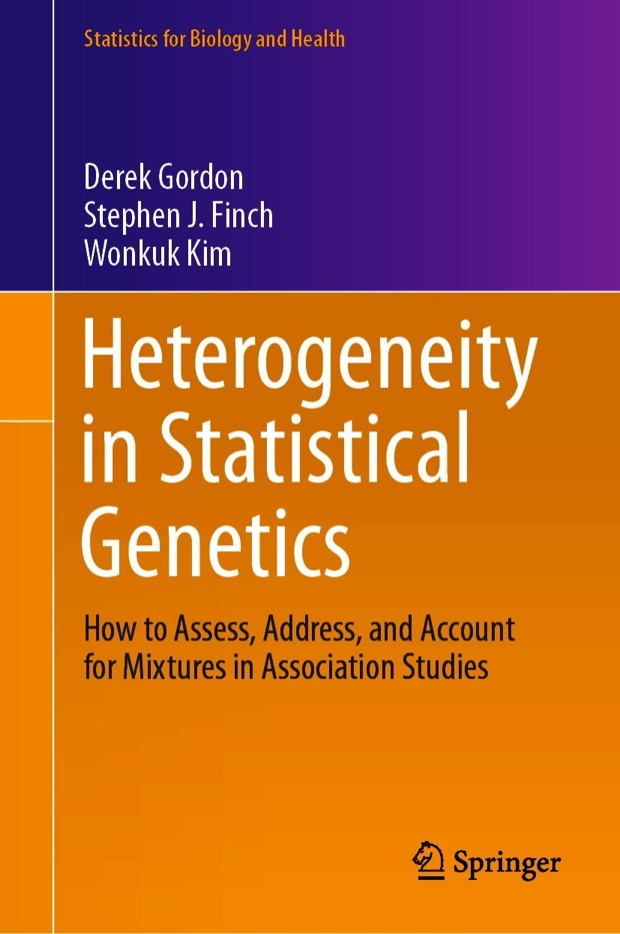

Power and Sample Size for
Genetic Association Studies
Plan genetic association studies before collecting data. Estimate power or the sample size you need under assumptions about genetic heterogeneity, genotype error, and phenotype misclassification.
What can paweh calculate?
Both calculations start with a proposed effect and a planned statistical test. In this worked example, the two calculations use the same case-control assumptions and genotype chi-square test.
How much power does my study have?
98.52% power
With 500 cases and 500 controls, this is the chance the test detects the assumed association.
How many participants do I need?
482 participants
For 80% power, recruit 241 cases and 241 controls. In a family study, plan for complete trios instead.
Choose your study design
Start with the people you can recruit and the measurements you expect to collect.
-
Case-Control Studies
Plan how many people with and without a condition to recruit for a comparison of genotypes.
-
TDT / Family Studies
Plan a study of affected children and both biological parents using informative allele transmissions.
-
Quantitative Traits
Plan a study of measurements such as height. Compare a full sample, selected extremes, or several traits.
-
Sequencing-Based Studies
Compare how sequencing depth and read errors affect recruitment for case-control studies and trios.
-
Validation-Based / LRTae Studies
Plan how many people to recruit when only some receive a reference diagnosis or a confirmatory genotype assay.
-
Hardy–Weinberg Equilibrium
Check genotype counts for departures from equilibrium and plan how many individuals you need to detect a specified departure.
-
Interactive Dashboard
Explore case-control, trio, and quantitative-trait designs in a Shiny interface.
Install and get started
paweh is currently available from GitHub. The package has yet to be released on CRAN. Install the stable main branch with the command below.
remotes::install_github("akilanthony/paweh", ref = "main")
Install remotes first if needed. For the current development package and all nine articles, see the develop installation in Getting Started.
Methodological foundation

Heterogeneity in Statistical Genetics: How to Assess, Address, and Account for Mixtures in Association Studies
Derek Gordon, Stephen J. Finch, and Wonkuk Kim. Springer, 2020.
The book explains how mixtures and measurement errors can change a genetic study’s power. Derek Gordon is a coauthor of both the book and paweh. The package also draws on other publications for individual methods.
Capabilities and limitations
paweh supports prospective study design using specified effect sizes, sampling plans, and measurement assumptions. Its sequencing calculations use planned read depths and error rates. Use separate analysis tools to process raw sequencing files or run downstream GWAS association tests.